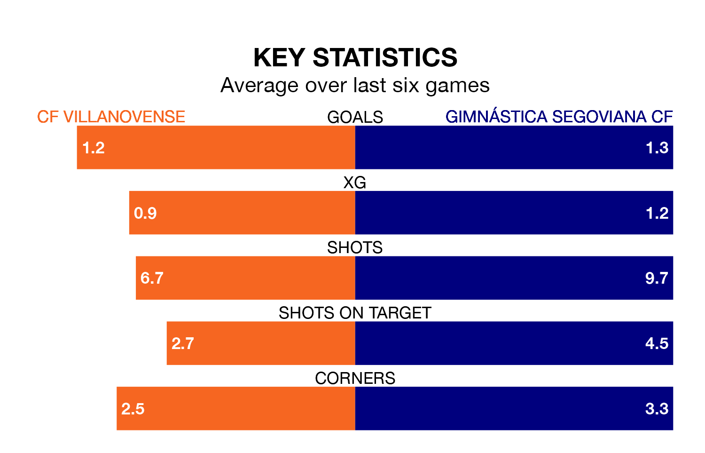

Two of Segunda División RFEF Group 5's meanest defences go head-to-head at the Estadio Municipal Villanovense on Sunday, when CF Villanovense host Gimnástica Segoviana CF.
Only three sides – Atlético Paso, Talavera CF and SS Reyes – have conceded fewer goals than Villanovense to date: the home side have let in just 17 goals in 19 games.
Gimnástica Segoviana have conceded the same number of goals in 19 games, giving them the joint-fourth tightest back line so far this season.
Gimnástica Segoviana are sixth in the table after 19 games, of which they have won seven and drawn eight, earning 29 points.
Villanovense are two places behind the away side in eighth, with seven wins and five draws putting them on 26 points.
In the last three years, Villanovense and Gimnástica Segoviana have played each other on three occasions. They won one each, and they drew once.
Their last meeting was on September 17, when Gimnástica Segoviana won 3-0 at home.
The hosts are in mixed form in Segunda División RFEF Group 5, with three wins and a draw from their last six games.
With two wins and three draws over that period, Gimnástica Segoviana's form is slightly worse – they have taken nine points from 18, compared to Villanovense's 10.
Villanovense's last match was on January 21, a 1-0 win against CP Cacereño.
Gimnástica Segoviana drew 0-0 with CDA Navalcarnero last time out, also on January 21.
Updated: 08:51 (UTC), 25/01/24